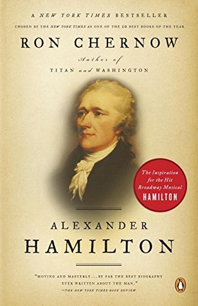

Alexander Hamilton
- Read on 2017-09-06
- Rating: ️️️️️
- Format: 🎧 (35 hours 58 minutes)
I'd love to know what Hamilton would have done with a longer life. He was obviously an exceptional person - truly visionary, and brilliant. His mix of education, background, perspective, and bull-headedness paid off in so many ways. It's hard to believe he could accomplish so much in such a relatively short life. That said, Chernow's approach to Hamilton, I felt, was too tainted with the opinion of the writer, at times. Maybe I'm just not sold on Chernow's approach to writing, and need to take a step back from my love of David McCullough's writing. Still, I found Hamilton himself to be immensely fascinating, and one I plan/hope to read more about.
- Prior: A Gentleman in Moscow
- Next: The Fault in Our Stars